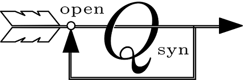

A modern open source toolbox for QFT control synthesis.
Quantitative Feedback Theory (QFT) is a frequency domain robust control design technique, introduced by Isaac Horowitz. If you were looking for Quantum Field Theory you are in the wrong place!
Open Qsyn is a Matlab based, object oriented, free open source toolbox to aid QFT control synthesis. It replaces the obsolete Qsyn toolbox developed by Per-Olof Gutman and co-workers in the 90s. The development is supported by Prof. Gutman himself, and all reused code is done with his premission.
Open Qsyn is distributed under GNU LGPLv3 license without any warranty.
How to use
Installation
- Download and unzip the
recent version (or fork the repo)
into a new folder named
<folderName> - Add
<folderName>to your Matlab path - Run
oqsyn_inito initiate the toolbox
Demo
A quick introductory example is provided by the live script exmaple.mlx.
This exmaple will guide you through the steps of SISO design: definning a
new plant and design specifications, computaing templates and bounds,
designing a feedback compensator and a pre-filter.
Documentation
Open Qsyn uses Matlab based documentation, thus viewd using standard Matlab
help and doc commands.
- General documentation is accsessed by typing
help <folderName>, with<folderName>Open Qsyn installation folder. - Documentation for a functions is viewd by typing
help <functionName>. - Documentation for a class is viewed by typing
help <className>. - Documentation for a method is viewed by typing
help <className/methodName>.
Status
Open Qsyn toolbox is under construction, but it can already be used for SISO QFT design for plants with parametric uncertainty, unstructuerd uncertainty, and uncertain delay. Feel free to open issues in order to report bugs or suggests new features. Just check the GitHub issues section first :).
The toolbox is regulary tested on Matlab 2015b,2017a,2017b. For complete functionality the Control Systems Toolbox is required.
Contact
rubindan115 at gmail dot com